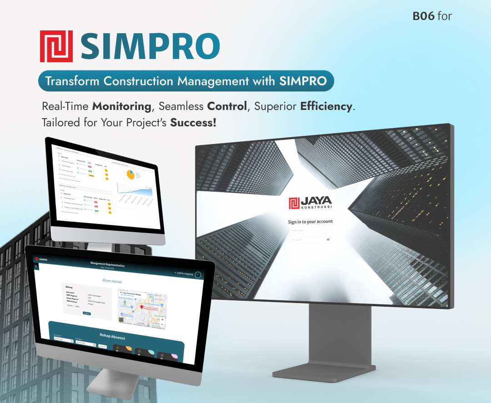
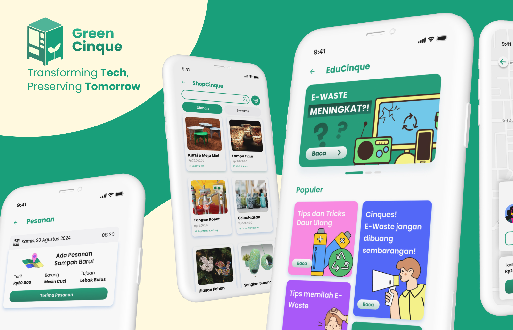

Projects
-

SIMPRO
2024SIMPRO (Sistem Informasi Manajemen Proyek) is a project management application to enhance the efficiency and effectiveness of construction project management. Designed with features tailored to project needs and a user-friendly interface, this application enables companies to easily and accurately monitor, organize, and control all aspects of construction projects.
View Hi-Fi -

KMS BEM FMIPA
2024KMS BEM FMIPA app serves as the go-to platform for BEM FMIPA UI 2024, facilitating seamless internal and external organizational management. Boasting features like FAQ, issue reporting, forums, and more, it's the ultimate tool for streamlined collaboration and problem-solving.
View Hi-Fi -

GreenCinque
2023GreenCinque innovates e-waste management, sorting and recycling electronics while generating jobs and a circular economy. Users deposit waste, creating roles for pickers and recyclers. Recycled products are sold on our e-commerce platform, benefiting both the environment and the economy.
View Hi-Fi -

NutriCoach
2023NutriCoach is an AI health app offers personalized advice on exercise, nutrition, and health goals. Analyzing user data, it provides tailored support for healthier lifestyle choices, potentially reducing disease risks and improving community well-being.
View Hi-Fi